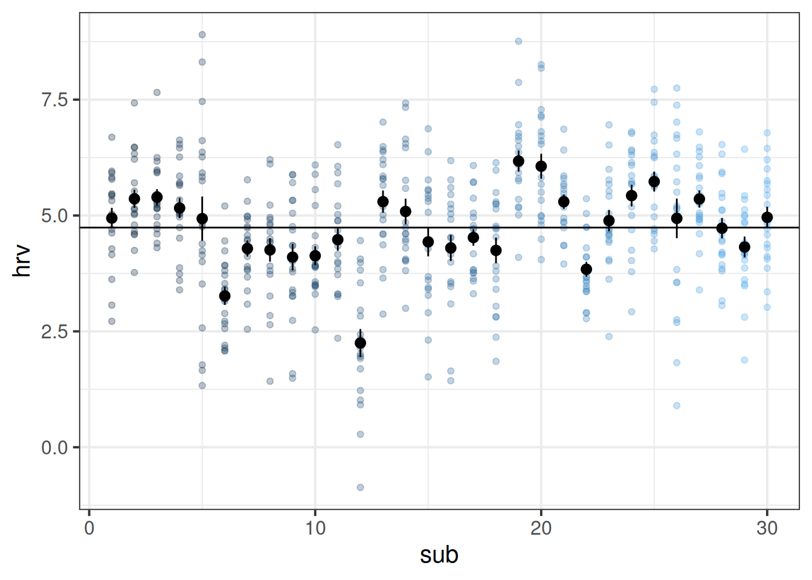

Regression Refresh and Clustered Data
Preliminaries
- Open Rstudio, and create a new project for this course!!
- Create a new RMarkdown document or R script (whichever you like) for this week.
New Packages!
These are the main packages we’re going to use in this block. It might make sense to install them now if you do not have them already (note, the rstudio.ppls.ed.ac.uk server already has lme4 and tidyverse installed for you).
- tidyverse : for organising data
- ICC : for quickly calculating intraclass correlation coefficient
- lme4 : for fitting generalised linear mixed effects models
- lmeresampler : for bootstrapping!
- effects : for tabulating and graphing effects in linear models
- broom.mixed : tidying methods for mixed models
- sjPlot : for plotting models
- DHARMa : for simulating residuals to assess assumptions
- HLMdiag : for examining case diagnostics at multiple levels
install.packages(c("tidyverse","ICC","lme4","effects","broom.mixed","sjPlot","HLMdiag"))
# the lmeresampler package has had some recent updates. better to install the most recent version:
install.packages("devtools")
devtools::install_github("aloy/lmeresampler")Linear model refresh
Recall that in the DAPR2 course last year we learned all about the linear regression model, which took the form:
\[ \begin{align}\\ & \text{for observation }i \\ & \color{red}{Y_i} = \color{blue}{\beta_0 \cdot{} 1 + \beta_1 \cdot{} X_{1i} \ + \ ... \ + \ \beta_p \cdot{} X_{pi}} + \varepsilon_i \\ \end{align} \]
And if we wanted to write this more simply, we can express \(X_1\) to \(X_p\) as an \(n \times p\) matrix (samplesize \(\times\) parameters), and \(\beta_0\) to \(\beta_p\) as a vector of coefficients:
\[ \mathbf{y} = \boldsymbol{X\beta} + \boldsymbol{\varepsilon} \quad \\ \text{where} \quad \varepsilon \sim N(0, \sigma) \text{ independently} \]
Data: Toy Data
Let’s consider a little toy example in which we might use linear regression to determine how practice (in hours per week) influences the reading age of different toy figurines
Imagine that we have data on various types of toys, from Playmobil, to Powerrangers, to farm animals.
You can find a dataset at https://uoepsy.github.io/data/toyexample.csv, and read it into your R environment using the code below:
toys_read <- read_csv("https://uoepsy.github.io/data/toyexample.csv")
| variable | description |
|---|---|
| toy_type | Type of Toy |
| toy | Character |
| hrs_week | Hours of practice per week |
| age | Age (in years) |
| R_AGE | Reading Age |
Read in the toy data from https://uoepsy.github.io/data/toyexample.csv and plot the bivariate relationship between Reading Age and Hrs per Week practice, and then fit the simple linear model: \[ \text{Reading Age}_i = \beta_0 + \beta_1 \cdot \text{Hours per week practice}_i + \varepsilon_i \]
Think about the assumptions we make about our model: \[ \text{where} \quad \varepsilon_i \sim N(0, \sigma) \text{ independently} \] Have we satisfied this assumption (specifically, the assumption of independence of errors)?
Try running the code below.
ggplot(data = toys_read, aes(x=hrs_week, y=R_AGE))+
geom_point()+
geom_smooth(method="lm",se=FALSE)Then try editing the code to include an aesthetic mapping from the type of toy to the color in the plot.
How do your thoughts about the relationship between Reading Age and Practice change?
Complete Pooling
We can consider the simple regression model (lm(R_AGE ~ hrs_week, data = toys_read)) to “pool” the information from all observations together. In this ‘Complete Pooling’ approach, we simply ignore the natural clustering of the toys, as if we were unaware of it. The problem is that this assumes the same regression line for all toy types, which might not be that appropriate:
Figure 1: Complete pooling can lead to bad fit for certain groups
No Pooling
There are various ways we could attempt to deal with the problem that our data are in groups (or “clusters”). With the tools you have learned in DAPR2, you may be tempted to try including toy type in the model as another predictor, to allow for some toy types being generally better than others:
lm(R_AGE ~ hrs_week + toy_type, data = toys_read)Or even to include an interaction to allow for toy types to respond differently to practice:
lm(R_AGE ~ hrs_week * toy_type, data = toys_read)This approach gets termed the “No Pooling” method, because the information from each cluster contributes only to an estimated parameter for that cluster, and there is no pooling of information across clusters. This is a good start, but it means that a) we are estimating a lot of parameters, and b) we are not necessarily estimating the parameter of interest (the overall effect of practice on reading age). Furthermore, we’ll probably end up having high variance in the estimates at each group.
Fit a linear model which accounts for the grouping of toys into their different types, but holds the effect of practice-hours-per-week on reading age as constant across types:
mod1 <- lm(R_AGE ~ hrs_week + toy_type, data = toys_read)Can you construct a plot of the fitted values from this model, coloured by toy_type?
(Hint: you might want to use the augment() function from the broom package)

What happens (to the plot, and to your parameter estimates) when you include the interaction between toy_type and hrs_week?
Some Data Wrangling
Data: Raising the stakes
30 volunteers from an amateur basketball league participated in a study on stress induced by size and type of potential reward for successfully completing a throw. Each participant completed 20 trials in which they were tasked with throwing a basketball and scoring a goal in order to win a wager. The size of the wager varied between trials, ranging from 1 to 20 points, with the order randomised for each participant. If a participant successfully threw the ball in the basket, then their score increased accordingly. If they missed, their score decreased accordingly. Participants were informed of the size of the potential reward/loss prior to each throw.
To examine the influence of the type of reward/loss on stress-levels, the study consisted of two conditions. In the monetary condition, (n = 15) participants were informed at the start of the study that the points corresponded to a monetary reward, and that they would be given their total score in £ at the end of the study. In the reputation condition, (n = 15) participants were informed that the points would be inputted on to a scoreboard and distributed around the local basketball clubs and in the league newsletter.
Throughout each trial, participants’ heart rate variability (HRV) was measured via a chest strap. HRV is considered to be indirectly related to levels of stress (i.e., higher HRV = less stress).
The data is in stored in two separate files.
- Information on the conditions for each trial for each participant is stored in .csv format at https://uoepsy.github.io/data/basketballconditions.csv.
- Information on participants’ HRV for each trial is stored in .xlsx format, and can be downloaded from https://uoepsy.github.io/data/basketballhrv.xlsx
We’re going to need to do some data wrangling now, so take a read through the boxes below on reshaping and merging data.
Pivot!
One of the more confusing things to get to grips with is the idea of reshaping a dataframe.
For different reasons, you might sometimes want to have data in wide, or in long format.

Figure 2: Source: https://fromthebottomoftheheap.net/2019/10/25/pivoting-tidily/
When the data is wide, we can make it long using pivot_longer(). When we make data longer, we’re essentially making lots of columns into 2 longer columns. Above, in the animation, the wide variable x, y and z go into a new longer column called name that specifies which (x/y/z) it came from, and the values get put into the val column.
The animation takes a shortcut in the code it displays above, but you could also use pivot_longer(c(x,y,z), names_to = "name", values_to = "val"). To reverse this, and put it back to being wide, we tell R which columns to take the names and values from: pivot_wider(names_from = name, values_from = val).
Joining data
Now comes a fun bit.
You may have noticed that we have two datasets for this study. If we are interested in relationships between the heart rate variability (HRV) of participants during each trial, as well as the experimental manipulations (i.e., the condition of each trial), these are currently in different datasets.
Solution: we need to join them together!
Provided that both data-sets contain information on participant number and trial number, which uniquely identify each observation, we can join them together matching on those variables!
There are lots of different ways to join data-sets, depending on whether we want to keep rows from one data-set or the other, or keep only those in both data-sets etc.

Figure 3: Check out the help documentation for them all using ?full_join.
Get the data into your R session.
Note: For one of the files, this is a bit different to how we have given you data in previous exercises. You may remember that for a .csv file, you can read directly into R from the link using, read_csv("https://uoepsy.......).
However, in reality you are likely to be confronted with data in all sorts of weird formats, such as .xlsx files from MS Excel. Have a look around the internet to try and find any packages/functions/techniques for getting both the datasets in to R.
Unfortunartely, a few students are getting error messages which we could not solve when trying to read in the xlsx data. The same data is available at https://uoepsy.github.io/data/bballhrv.csv so that you can read it in using:
read_csv("https://uoepsy.github.io/data/bballhrv.csv")Is each dataset in wide or long format? We want them both in long format, so try to reshape either/both if necessary.
Hint - in the tidyverse functions, you can specify all columns between column x and column z by using the colon, x:z.
join the two datasets (both in long format) together.
Note that the variables we are matching on need to have the information in the same format. For instance, R won’t be able to match "trial_1","trial_2","trial_3" with 1, 2, 3 because they are different things. We would need to edit one of them to be in the same format.
Hint: You should end up with 600 rows.
Exploring Clustering
Continuing with our basketball/hrv study, consider the following questions:
What are the units of observations?
What are the groups/clusters?
What varies within these clusters?
What varies between these clusters?
Now that you have tidied and joined all the data together, plot the relationship between size of reward and HRV, ignoring the fact that there are repeated observations for each subject.
Can you make a separate plot for each of the experimental conditions? (Hint: facet_wrap())
How are stress levels (measured via HRV) influenced by the size of potential reward/loss?
Ignore the clustering, and fit a simple linear regression estimating how heart rate variability is influenced by how high the stakes are (i.e. how big the reward is) for a given throw.
Consider the following research question:
How do size and type of reward/loss interact to influence levels of stress?
Extend your model to include the interaction between stakes and experimental condition and examine the parameter values.
Let’s start to examine the clustering a bit more.
Plot the relationship between size of reward and HRV, with a separate line for each subject.
Hint: remember the group = aesthetic in ggplot!
Calculate the ICC, using the ICCbare() function from the ICC package.
Remember, you can look up the help for a function by typing a ? followed by the function name in the console.
Understanding ICC a bit better
Think about what ICC represents - the ratio of the variance between the groups to the total variance.
You can think of the “variance between the groups” as the group means varying around the overall mean (the black dots around the black line), and the total variance as that plus the addition of the variance of the individual observations around each group mean (each set of coloured points around their respective larger black dot):
ggplot(bball, aes(x=sub, y=hrv))+
geom_point(aes(col=sub),alpha=.3)+
stat_summary(geom = "pointrange")+
geom_hline(yintercept = mean(bball$hrv))+
guides(col=FALSE)
You can also think of the ICC as the correlation between two randomly drawn observations from the same group. This is a bit of a tricky thing to get your head round if you try to relate it to the type of “correlation” that you are familiar with. Pearson’s correlation (e.g think about a typical scatterplot) operates on pairs of observations (a set of values on the x-axis and their corresponding values on the y-axis), whereas ICC operates on data which is structured in groups.
Fixed effects
Let’s suppose we want to account for the by-participant clustering in our data with the “No pooling” method (i.e., in our multiple regression model, include participant ID as an additional predictor, along with its interaction with explanatory variable of interest).
- Make sure that the participant ID variable is a factor!
- Fit the model
- Use the
plot_model()function (withtype = "int") to plot the interaction terms betweenstakesand each participant.
Note: When examining parameter values, remember to think about how HRV is considered to relate to stress, and whether the direction of any effect you see makes theoretical sense.
We have fitted two models so far:
- The complete pooling model:
lm(hrv ~ stakes, data = bball), which ignores the fact that our data has some inherent grouping (multiple datapoints per participant) - The no pooling model:
lm(hrv ~ stakes*sub, data = bball), which estimates only participant-specific effects.
Compare the two models using anova(). Which model provides the best fit?
Recall our research question: “How are stress levels (measured via HRV) influenced by the size of potential reward/loss?”
From the model lm(hrv ~ stakes*sub, data=bball), do we estimate a parameter that allows us to complete the following sentence?:
- “For every 1 point increase in reward, heart rate variability changed by _ ? _ units.”
Let’s suppose we want to examine the interaction between size and type of reward (stakes * condition), using the “no pooling” method (i.e., including participant as a fixed effect).
We have the variable stakes, that varies within each participant, and another variable condition that varies between participants.
This becomes difficult because the sub variable (the participant id variable) uniquely identifies the two conditions. Note that if we fit the following model, some coefficients are not defined.
Try it and see:
lm(hrv ~ stakes*sub + stakes*condition, data=bball)This sort of perfectly balanced design has traditionally been approached with extensions of ANOVA (“repeated measures ANOVA,”“mixed ANOVA”). These methods can partition out variance due to one level of clustering (e.g. subjects), and can examine factorial designs when one factor is within cluster, and the other is between. You can see an example below if you are interested. However, ANOVA has a lot of constraints - it can’t handle multiple levels of clustering (e.g. children in classes in schools), it will likely require treating variables suc as time as a factor, and it’s not great with missing data. The multi-level model (MLM) provides a more flexible framework, and this is what we will begin to look at next week.
Image sources:
http://tophatsasquatch.com/2012-tmnt-classics-action-figures/
https://www.dezeen.com/2016/02/01/barbie-dolls-fashionista-collection-mattel-new-body-types/
https://www.wish.com/product/5da9bc544ab36314cfa7f70c
https://www.worldwideshoppingmall.co.uk/toys/jumbo-farm-animals.asp
https://www.overstock.com/Sports-Toys/NJ-Croce-Scooby-Doo-5pc.-Bendable-Figure-Set-with-Scooby-Doo-Shaggy-Daphne-Velma-and-Fred/28534567/product.html
https://tvtropes.org/pmwiki/pmwiki.php/Toys/Furby
https://www.fun.com/toy-story-4-figure-4-pack.html
https://www.johnlewis.com/lego-minifigures-71027-series-20-pack/p5079461↩︎